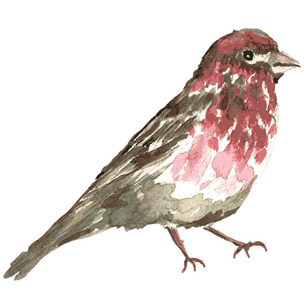

Day 2 - Material Design experiment

So... Day 2 is completed with a very simple try of the Material Design cards. I didn't get the hang of it as of yet, but I started to understand some of its dynamics. I think I need more than a few hours to make the most of it :)
And... maybe is just my lack of experience on it, seems that it takes a lot of tweaking for something to come up half-decent. Let's see if my opinion changes with time, and experience.
Explore the Material Design Lite documentation to know more.